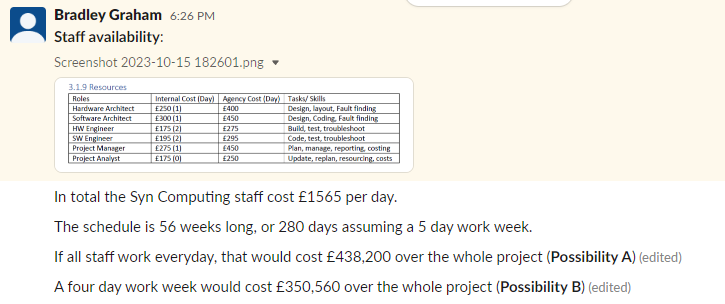
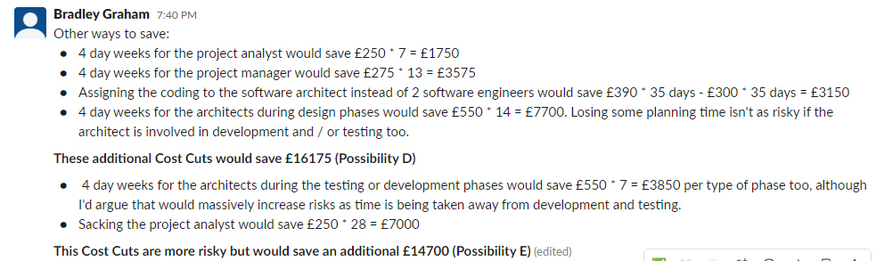
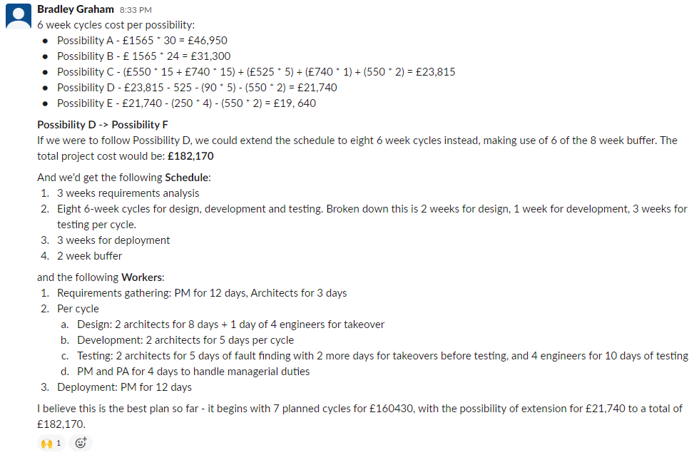
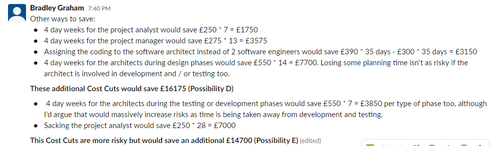
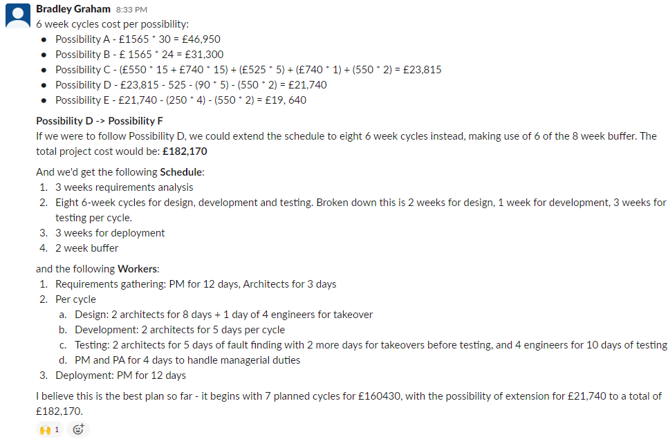

Week 7
Reading
The core readings of the week consisted of Verner et al's 'Risks and Risk Mitigation in Global Software Development' (2014), and Anton & Nucu's 'Enterprise Risk Management: A Literature Review and Agenda for Future Research' which gave a broad overview of risk mitigation. Towards the beginning of this course I praised systematic literature reviews for their aid when trying to navigate research. That perspective has changed slightly in the case of these papers for multiple reasons. Firstly, the topics didn't fully align with the material I was looking for; which was material for my group project specifically about project resource distribution. Secondly, while I pulled out the key ideas into Notion, as I usually do, I realised I have a large directory already to risk mitigation research. At this point, I believe I would benefit most from tracking the most recent publications on risk mitigations, which provide the most contemporary insights, and are most relevant to criticise. Due to the vast amounts of information on risk mitigations, it's more efficient for me to read contemporary work alongside credible textbooks that already summarise some of the research to a point. Unfortunately, SLR's are not timeless. I've gained a more specific research interest on timeless, updateable mediums for research. I've talked about my interest in model-based reasoning and ontologies in the past, and this new insight, I feel, once again shows me my interest lays with knowledge management. I'd like to explore the idea of procedurally extracting key ideas and findings in research papers and storing them in an ontology. One way I could begin this is by exploring what sorts of entities could encapsulate key ideas and findings, so that's something I will look into after this module. However, from the perspective of project management, risk management itself has been a really interesting topic, as one of the key activities of a project manager. The past module we did on risk management has helped me to know more formally why the organisation I work for makes some of the decisions it does, and I have no doubt it will continue being valuable for me.
Example of Risk-Related Paper Archive

Exaple of Risk-Related Key Ideas Archive


Group Project
This was my proposal for the projec workforce.
 


